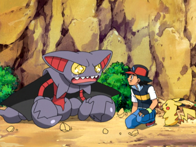
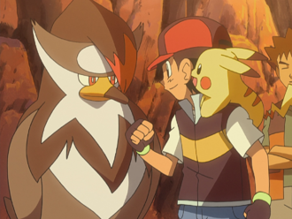

Ash's Pokemon In Sinnoh
Ash Ketchum is in possession of a fairly large number of pokemon. Over his career He has had about 102 different species under his care. This website will list several pokemon which he acquired over his journey through pokemons many regions.
Gliscor
Gliscor is the Fang Scorpion Pokemon. It is a ground and flying type. It is the fifth pokemon Ash catches in Sinnoh. It was caught as a Gliscor. It decided to join Ash after he and some friends saved it from a windstorm. It is one of Ash's most emotional pokemon.

Staraptor
Staraptor is the Predator Pokemon. It is a normal and flying type. It is the first pokemon Ash catches in Sinnoh. It was caught as a Starly later evolving into a Staravia and then into Staraptor. It was caught during Ash's attemps to search for Pikachu following and encounter from Team Rocket. It showed a love for battle.
